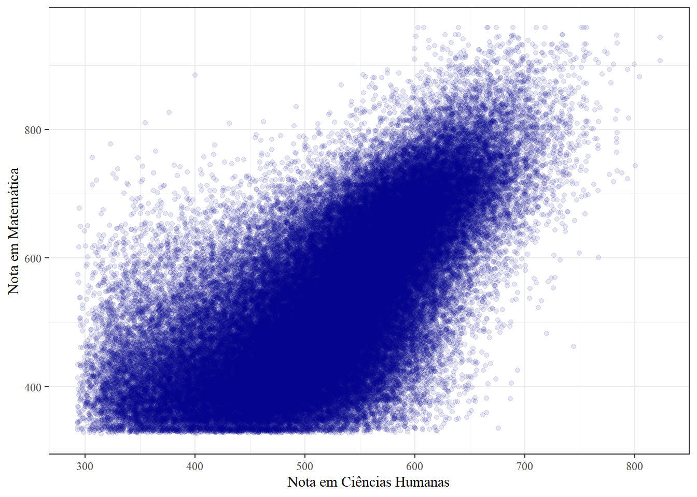
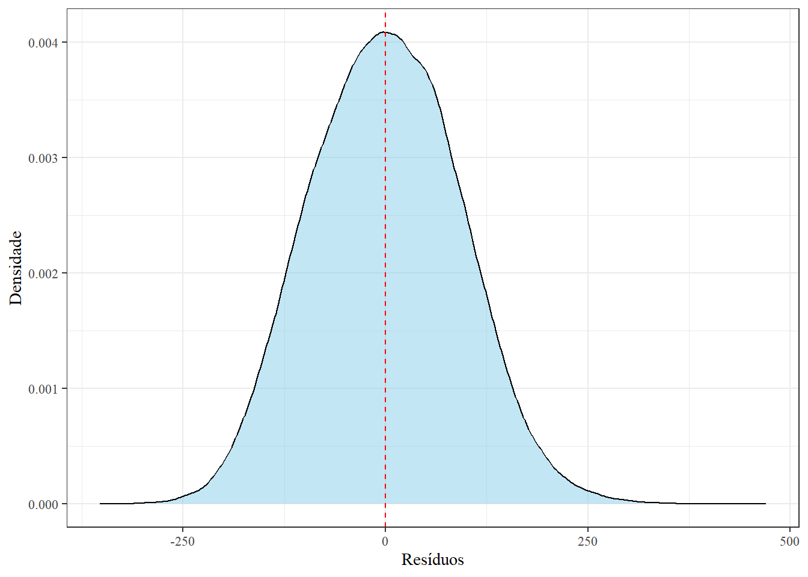
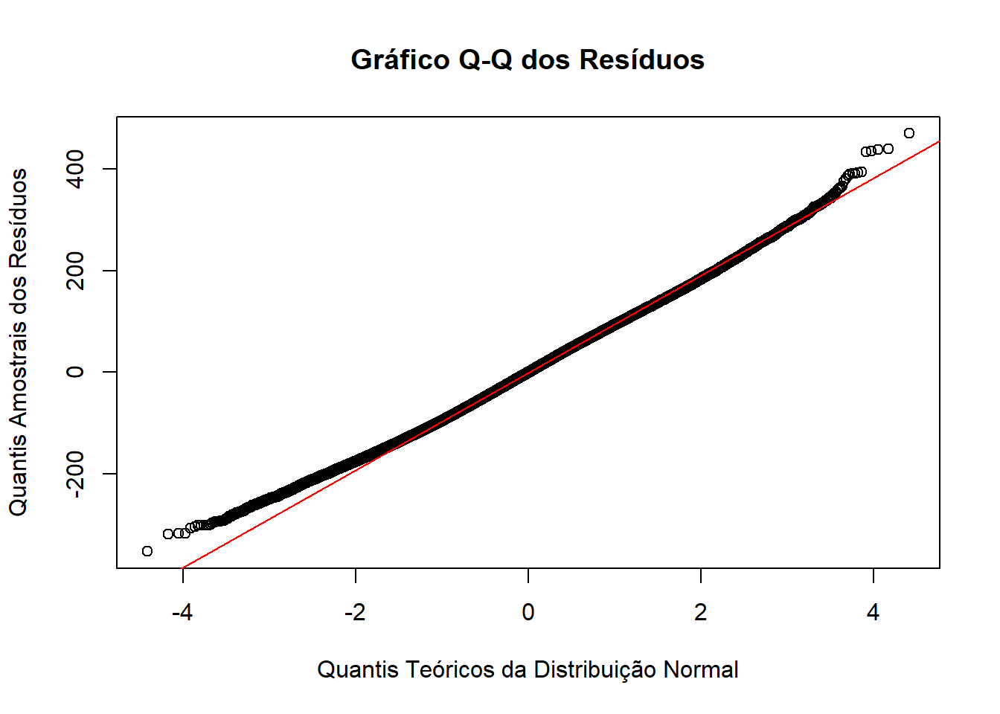
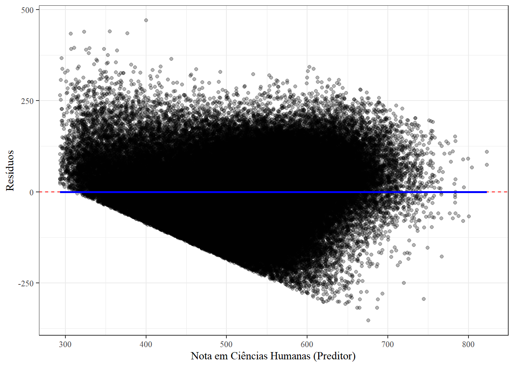
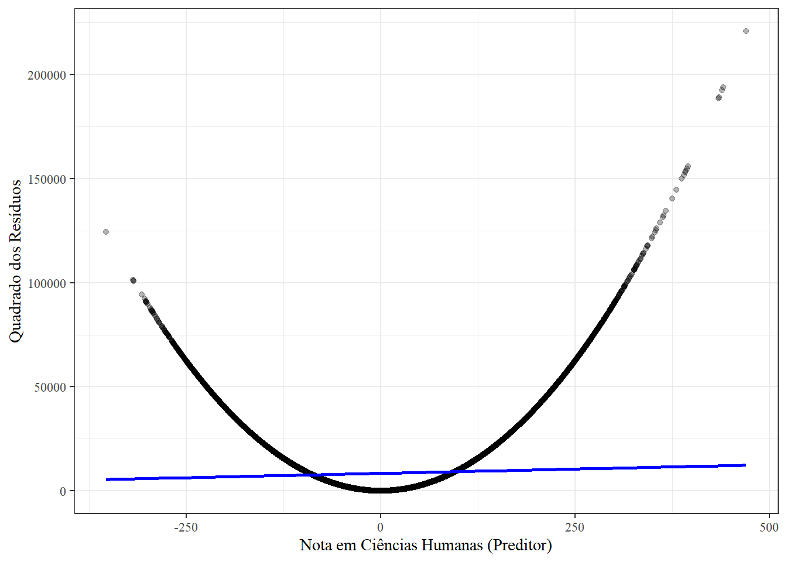
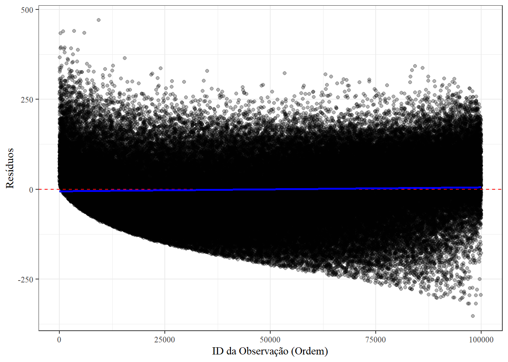

pacman::p_load(
rio,
tidyverse,
stargazer,
sjPlot,
lmtest,
sandwich,
performance
)
options(scipen = 999)Lista 05 - Regressão
1 Ambientação
2 Importando e limpando dados do ENEM 2023
- Lendo o documento usando a função
importdo pacoterio, que é mais rápido.
df <- rio::import("../dados/DADOS/MICRODADOS_ENEM_2023.csv")- Selecionando as variáveis de interesse.
df <- df %>%
select(NU_NOTA_CH, NU_NOTA_MT, NU_NOTA_CN, NU_NOTA_LC, TP_SEXO, TP_COR_RACA, TP_ESCOLA)As variáveis selecionadas dizem respeito à nota da prova de um candidato em Ciências Humanas, Ciências da Natureza, Linguagem e Códigos, Matema´tica, bem como o Tipo de Escola cursado no Ensino Médio (Pública ou Privada), a Cor/Raça, de acordo com critérios do IBGE, e o Sexo (Masculino ou Feminino).
- Limpando a base de dados.
df_limpo <- df %>%
filter(
# Filtrando notas iguais a zero
NU_NOTA_CH > 0,
NU_NOTA_MT > 0,
NU_NOTA_CN > 0,
NU_NOTA_LC > 0,
# Filtrando raça não declarada
TP_COR_RACA != 6,
# Filtrando escola não declarada
TP_ESCOLA != 1
) %>%
# Eliminando dados ausentes
na.exclude() %>%
janitor::clean_names()3 Recortando os dados
O meu banco é composto por 1044048 linhas, após a filtragem de dados e a exclusão de NAs.
set.seed(666)
amostra <- df_limpo %>% slice_sample(n = 100000)4 Analisando os dados: regressão linear simples
Objetivo: Utilizar as notas em ciências humanas para prever as notas em matemática por meio de uma regressão linear simples. Nossa equação é dada por:
\[\text{NU_NOTA_MT} = \beta_0 + \beta_1 \times \text{NU_NOTA_CH} + \epsilon\]
Texto para não dar problema no latex.
- Gráfico de dispersão
amostra %>%
ggplot(aes(x = nu_nota_ch, y = nu_nota_mt)) +
geom_point(
alpha = 0.1,
colour = "darkblue") +
labs(
x = "Nota em Ciências Humanas",
y = "Nota em Matemática"
)+
theme_bw(base_family = "serif")
- Regressão linear simples1
reg_1 <- lm(nu_nota_mt ~ nu_nota_ch,
data = amostra)
stargazer(reg_1, type = "text")
=================================================
Dependent variable:
-----------------------------
nu_nota_mt
-------------------------------------------------
nu_nota_ch 0.990***
(0.004)
Constant 18.876***
(1.844)
-------------------------------------------------
Observations 100,000
R2 0.444
Adjusted R2 0.444
Residual Std. Error 91.865 (df = 99998)
F Statistic 79,945.050*** (df = 1; 99998)
=================================================
Note: *p<0.1; **p<0.05; ***p<0.01De acordo com o modelo, para cada aumento de 1 ponto na nota de Ciências Humanas, a nota de matemática é esperada aumentar em 0,990, pontos em média. Isso é constatado ao interpretar o valor do \(\hat{\beta_1}\), que é altamente significativo, com \(p < 0.01\). Além disso, o \(R^2\) é de 44,4%. Ou seja, a nota em Ciências Humanas explica 44% da variação total na nota de matemática.
5 Inferência estatística
- Cálculo do intervalo de coeficiência dos coeficientes ao nível de confiança de 95%.
\[IC = \hat{\beta} \pm 1.96 \times \text{Erro Padrão}\]
Para \(\hat{\beta_0}\) temos:
ic_inferior_b0 = 18.876 - (1.96 * 1.844)
ic_superior_b0 = 18.876 + (1.96 * 1.844)Para \(\hat{\beta_1}\) temos:
ic_inferior_b1 = 0.990 - (1.96 * 0.004)
ic_superior_b1 = 0.990 + (1.96 * 0.004)Usando a função confint:
confint(reg_1, level = 0.95) 2.5 % 97.5 %
(Intercept) 15.2625509 22.4902123
nu_nota_ch 0.9833256 0.9970535- Homocedasticidade e heterocedasticidade
Homocedasticidade e heterocedasticidade referem-se à variância dos erros em um modelo de regressão. A homocedasticidade significa que os erros variam de forma constante ao redor da linha de regressão. É a premissa ideal.
A heterocedasticidade signfica que a dispersão dos resíduos varia à medida que a variável preditora muda. O modelo não é confiável quando a premissa é violada.
- Recalculando o modelo de regressão
modelo_hc1 <- coeftest(reg_1, vcov = vcovHC(reg_1, type = "HC1"))
print(modelo_hc1)
t test of coefficients:
Estimate Std. Error t value Pr(>|t|)
(Intercept) 18.8763816 1.8515794 10.195 < 0.00000000000000022 ***
nu_nota_ch 0.9901896 0.0035548 278.546 < 0.00000000000000022 ***
---
Signif. codes: 0 '***' 0.001 '**' 0.01 '*' 0.05 '.' 0.1 ' ' 1As estimativas do modelo permanecem as mesmas, ao passo que o erro padrão apresenta uma pequena variação. Agora, é calculado o erro padrão robusto. O valor de \(p\) continua significativo.
6 Checagem do modelo
- Gere os resíduos do modelo executado anteriormente
residuos <- residuals(reg_1)
preditor <- amostra$nu_nota_ch- Crie uma nova tabela com as seguintes variáveis: os resíduos gerados no item anterior e a variável preditora do nosso modelo.
df_residuos <- data.frame(
residuos = residuos,
nu_nota_ch = preditor,
id = row_number(amostra)
)- Análise dos resíduos.
A média dos resíduos é de 0. A Figura 1 apresenta a distribuição dos resíduos. A média dos resíduos é muito próxima de zero, e a distribuição segue uma distribuição normal.
df_residuos %>%
ggplot(aes(x = residuos)) +
geom_density(fill = "skyblue", alpha = 0.5) +
geom_vline(xintercept = 0, color = "red", linetype = "dashed") +
labs(
x = "Resíduos",
y = "Densidade"
) +
theme_bw(base_family = "serif")

- Gráfico quantil-quantil
O qqplot checa a normalidade dos resíduos, ao comparar os quantis dos resíduos observados com quantis teóricos. Quando a distribuição dos resíduos é normal, os pontos no gráfico QQ se alinham com a reta.
- Funções
qqnorm()eqqline()
# Configurando o layout para o gráfico Q-Q
par(mfrow = c(1, 1))
# Gráfico Q-Q dos resíduos
qqnorm(df_residuos$residuos,
main = "Gráfico Q-Q dos Resíduos",
xlab = "Quantis Teóricos da Distribuição Normal",
ylab = "Quantis Amostrais dos Resíduos")
# Adicionar a linha de referência
qqline(df_residuos$residuos, col = "red")
Através do gráfico, há normalidade dos resíduos.
- Gráfico de dispersão
A Figura 2 apresenta os resíduos contra os valores ajustados do modelo. O pressuposto da linearidade avalia se a realação entre os preditores e a variável resposta é, em média, linear. Supõe-se que \(\mathbb{E}[\epsilon | X] = 0\) (a média condicional dos erros é zero, logo, o preditor e o erro não estão correlacionados).
df_residuos %>%
ggplot(aes(x = nu_nota_ch, y = residuos)) +
geom_point(alpha = 0.3) +
geom_hline(yintercept = 0, color = "red", linetype = "dashed") +
geom_smooth(method = "lm", color = "blue", se = FALSE) + # Reta de Regressão
labs(
x = "Nota em Ciências Humanas (Preditor)",
y = "Resíduos") +
theme_bw(base_family = "serif")

- Quadrado dos resíduos
A Figura 3 confirma a presença de heterocesdaticidade, ou seja, a variância nos erros não é constante.
df_residuos <- df_residuos %>%
mutate(residuos_quadrado = residuos^2)
df_residuos %>%
ggplot(aes(x = residuos, y = residuos_quadrado)) +
geom_point(alpha = 0.3) +
geom_smooth(method = "lm", color = "blue") +
labs(
x = "Nota em Ciências Humanas (Preditor)",
y = "Quadrado dos Resíduos") +
theme_bw(base_family = "serif")

- Geração da coluna “id”
A coluna “id” foi feita no ponto 1.
- Independência dos erros
A Figura 4 sugere que não há correlação entre a ordem da observação e o resíduo.
df_residuos %>%
ggplot(aes(x = id, y = residuos)) +
geom_point(alpha = 0.3) +
geom_hline(yintercept = 0, color = "red", linetype = "dashed") +
geom_smooth(method = "lm", color = "blue", se = FALSE) +
labs(
x = "ID da Observação (Ordem)",
y = "Resíduos") +
theme_bw(base_family = "serif")

Notas de rodapé
Prefiro utilizar a função
stargazerporque o output é melhor.↩︎